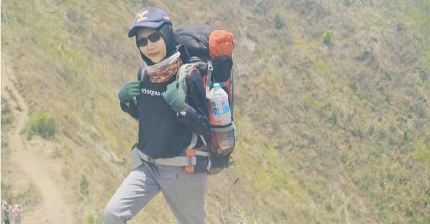

Bukan Gunung yang harus kamu takhlukan, Tapi dirimu sendiri !
Sejauh apapun Kamu melangkah, jika itu adalah tujuan untuk mencapai harapanmu, maka berjuanglah! – Arif (pendaki gunung)-

About
Informasi yang dibuat sekitar gunung di Indonesia
Welcome Sahabat Pendaki :)